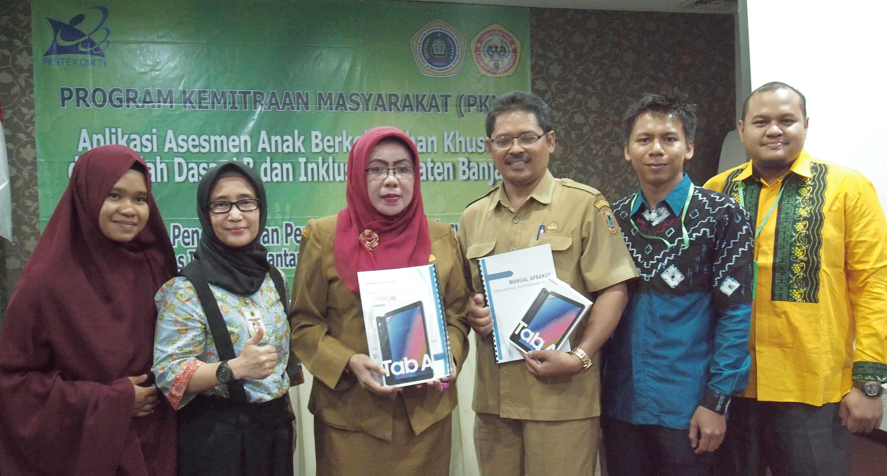

Tim

Kegiatan ini dimulai dari hibah Penelitian Dosen Pemula tahun 2017 yang dimenangkan oleh Mirza Yogy Kurniawan (paling kanan), dengan judul yang serupa. Tahun berikutnya kegiatan dilanjutkan dalam hibah Program Kemitraan Masyarakat (PKM) yang dimenangkan oleh Fathul Hafidh (nomor dua dari kanan)
Mitra
Pada kegiatan PKM ini ada 2 (dua) sekolah yang digandeng sebagai mitra. yaitu SDN Keraton 4 Martapura yang memiliki status sekolah inklusi, dan SDNLB 2 Sungai Paring yang memang bergerak dibidang pendidikan Anak Berkebutuhan Khusus (ABK)
SDN Keraton 4 Martapura

Berada di jalur utama Bandung-Lembang, Farm House menjadi objek wisata yang tidak pernah sepi pengunjung. Selain karena letaknya strategis, kawasan ini juga menghadirkan nuansa wisata khas Eropa. Semua itu diterapkan dalam bentuk spot swafoto Instagramable.
SDNLB 2 Sungai Paring

Berada di jalur utama Bandung-Lembang, Farm House menjadi objek wisata yang tidak pernah sepi pengunjung. Selain karena letaknya strategis, kawasan ini juga menghadirkan nuansa wisata khas Eropa. Semua itu diterapkan dalam bentuk spot swafoto Instagramable.